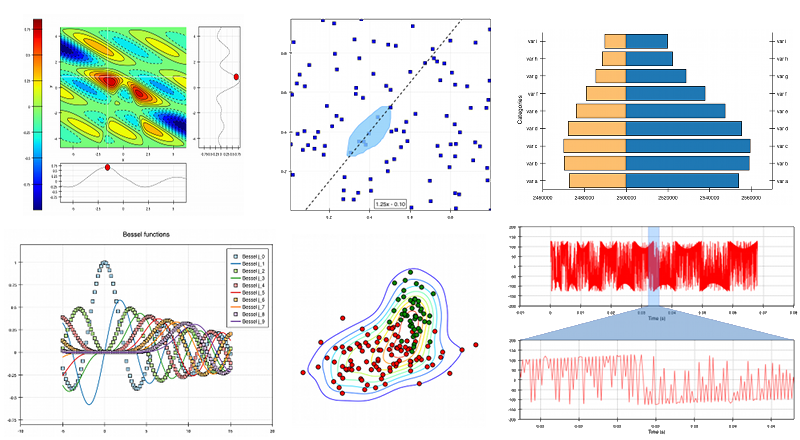

Chaco 5.1.0¶
Chaco is a Python package for building interactive and custom 2-D plots and visualizations. Chaco facilitates writing plotting applications at all levels of complexity, from simple scripts with hard-coded data to large plotting programs with complex data interrelationships and a multitude of interactive tools. While Chaco generates attractive static plots for publication and presentation, Chaco differs from tools like Matplotlib in that it also works well for dynamic interactive data visualization and exploration. Chaco is part of the Enthought Tool Suite.
{kind=link}
Chaco includes renderers for many popular plot types, built-in implementations of common interactions with those plots, and a framework for extending and customizing plots and interactions. Chaco can also render graphics in a non-interactive fashion to images, in either raster or vector formats, and it has a subpackage for doing command-line plotting or simple scripting.
Installation¶
Chaco and all of its dependencies (including the PyQt backend) can be installed using the Enthought Deployment Manager (formerly EPD):
edm install chaco pyqt5
For full installation options, including installation from source, see the installation instructions.
Documentation¶
For developers exploring Chaco for the first time, these tutorials and examples give a good overview of the capabilities of Chaco:
Examples:
There is also a How Do I…? page which provides answers to issues and common tricks that help when building Chaco applications.
For comprehensive documentation, we have:
Reporting bugs and contributing¶
Since Chaco is open source and hosted on Github, the development version can always be checked out from Github, forked, and modified at will. When a bug is found, please submit an issue in the issue page. If you would like to share a bug fix or a new feature, simply submit a Pull Request from your fork. Don’t forget to specify very clearly what code to run to reproduce the issue, what the logic of the fix is and to add one or more unit tests to ensure future stability. The Pull Request description can and often needs to contain screenshots of the issue or the fix.
License¶
As part of the Enthought Tool Suite, Chaco is free and open source under a BSD license:
This software is OSI Certified Open Source Software. OSI Certified is a certification mark of the Open Source Initiative.
Copyright (c) 2005-2021, Enthought, Inc. All rights reserved.
Redistribution and use in source and binary forms, with or without modification, are permitted provided that the following conditions are met:
Redistributions of source code must retain the above copyright notice, this list of conditions and the following disclaimer.
Redistributions in binary form must reproduce the above copyright notice, this list of conditions and the following disclaimer in the documentation and/or other materials provided with the distribution.
Neither the name of Enthought, Inc. nor the names of its contributors may be used to endorse or promote products derived from this software without specific prior written permission.
THIS SOFTWARE IS PROVIDED BY THE COPYRIGHT HOLDERS AND CONTRIBUTORS “AS IS” AND ANY EXPRESS OR IMPLIED WARRANTIES, INCLUDING, BUT NOT LIMITED TO, THE IMPLIED WARRANTIES OF MERCHANTABILITY AND FITNESS FOR A PARTICULAR PURPOSE ARE DISCLAIMED. IN NO EVENT SHALL THE COPYRIGHT OWNER OR CONTRIBUTORS BE LIABLE FOR ANY DIRECT, INDIRECT, INCIDENTAL, SPECIAL, EXEMPLARY, OR CONSEQUENTIAL DAMAGES (INCLUDING, BUT NOT LIMITED TO, PROCUREMENT OF SUBSTITUTE GOODS OR SERVICES; LOSS OF USE, DATA, OR PROFITS; OR BUSINESS INTERRUPTION) HOWEVER CAUSED AND ON ANY THEORY OF LIABILITY, WHETHER IN CONTRACT, STRICT LIABILITY, OR TORT (INCLUDING NEGLIGENCE OR OTHERWISE) ARISING IN ANY WAY OUT OF THE USE OF THIS SOFTWARE, EVEN IF ADVISED OF THE POSSIBILITY OF SUCH DAMAGE.
DISCLOSURE: Under the terms of the Matplotlib 0.83.2 License Agreement, Enthought must disclose where the Matplotlib source code has been used:
Chaco makes use of some code from Matplotlib for creating linear segmented colormaps. This code from Matplotlib has been incorporated directly into the Chaco LinearSegmentedColormap class and is marked with the tag #### matplotlib ####.
The “contour” module is also from the Matplotlib project.
The above code is licensed under the terms of the Matplotlib license, reproduced below:
LICENSE AGREEMENT FOR MATPLOTLIB 0.83.2¶
1. This LICENSE AGREEMENT is between the John D. Hunter (“JDH”), and the Individual or Organization (“Licensee”) accessing and otherwise using matplotlib software in source or binary form and its associated documentation.
2. Subject to the terms and conditions of this License Agreement, JDH hereby grants Licensee a nonexclusive, royalty-free, world-wide license to reproduce, analyze, test, perform and/or display publicly, prepare derivative works, distribute, and otherwise use matplotlib 0.83.2 alone or in any derivative version, provided, however, that JDH’s License Agreement and JDH’s notice of copyright, i.e., “Copyright (c) 2002-2004 John D. Hunter; All Rights Reserved” are retained in matplotlib 0.83.2 alone or in any derivative version prepared by Licensee.
3. In the event Licensee prepares a derivative work that is based on or incorporates matplotlib 0.83.2 or any part thereof, and wants to make the derivative work available to others as provided herein, then Licensee hereby agrees to include in any such work a brief summary of the changes made to matplotlib 0.83.2.
4. JDH is making matplotlib 0.83.2 available to Licensee on an “AS IS” basis. JDH MAKES NO REPRESENTATIONS OR WARRANTIES, EXPRESS OR IMPLIED. BY WAY OF EXAMPLE, BUT NOT LIMITATION, JDH MAKES NO AND DISCLAIMS ANY REPRESENTATION OR WARRANTY OF MERCHANTABILITY OR FITNESS FOR ANY PARTICULAR PURPOSE OR THAT THE USE OF MATPLOTLIB 0.83.2 WILL NOT INFRINGE ANY THIRD PARTY RIGHTS.
5. JDH SHALL NOT BE LIABLE TO LICENSEE OR ANY OTHER USERS OF MATPLOTLIB 0.83.2 FOR ANY INCIDENTAL, SPECIAL, OR CONSEQUENTIAL DAMAGES OR LOSS AS A RESULT OF MODIFYING, DISTRIBUTING, OR OTHERWISE USING MATPLOTLIB 0.83.2, OR ANY DERIVATIVE THEREOF, EVEN IF ADVISED OF THE POSSIBILITY THEREOF.
6. This License Agreement will automatically terminate upon a material breach of its terms and conditions.
7. Nothing in this License Agreement shall be deemed to create any relationship of agency, partnership, or joint venture between JDH and Licensee. This License Agreement does not grant permission to use JDH trademarks or trade name in a trademark sense to endorse or promote products or services of Licensee, or any third party.
8. By copying, installing or otherwise using matplotlib 0.83.2, Licensee agrees to be bound by the terms and conditions of this License Agreement.